|
Hello dahlia friends!
The weeks fly by and we have been so busy since
our last club meeting. At the beginning of the
month we had special guest Warren Vigor for our
April Zoom meeting. Members enjoyed a photo
slide show while Warren shared his expertise
with us about how he grows and hybridizes
dahlias in Australia. We were truly impressed
with how Warren gardens exclusively under shade
cloth and his support structures for this
purpose. It was wonderful to see the beautiful
dahlias grown halfway around the world. We look
forward to getting to hang out with Warren in
person at the National ADS Dahlia Show hosted by
the National Capital Dahlia Society in Reston,
VA come September.
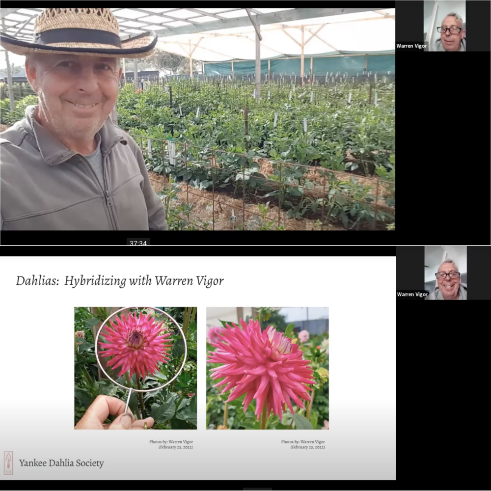
Screen Images of Zoom with Warren
Last week we offered two brief Zoom Q&A sessions
as a time for beginner growers to ask their
dahlia growing questions. It was great to have
club members share their own experience and
tips. We are glad many of you were able to join
us and feel more confident as the season begins.
For those of you who weren’t able to make the
Zoom meetings we do have it available for YDS
members to replay. It’s a perk of your club
membership! All members have individual access.
Please let us know if you have any questions
about accessing the Google folder that contains
all our Zoom recordings.
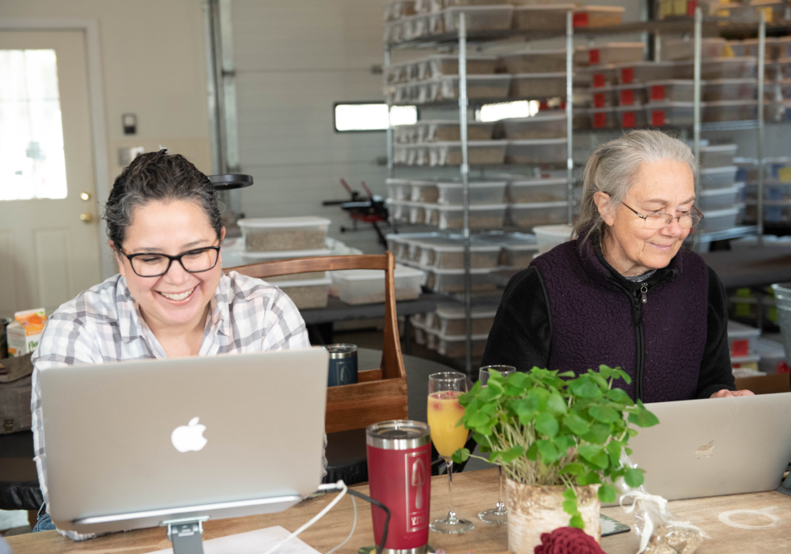
Photos by: John Livornese
In the meantime, we can’t believe Sunday will be
May 1st already and look forward to meeting in
person at Spence Farm for a fun presentation by
YDS member Andrea Campbell. We are super excited
to have our members share their dahlia growing
journey with the club. There is so much
diversity and knowledge within our group; we
look forward to getting more members involved
(both new and experienced growers). We look
forward to having everyone come out and support
Andrea at Sunday’s meeting!
With the weather starting to warm up we are
checking things off the list as we prepare for a
big month. Our public tuber sale will be held at
Massachusetts Horticultural Society on May 15th
and in addition we will be sorting tubers to
plant out in just a few short weeks. Anyone who
has extra time and would like to participate in
any of our volunteer activities this month
including planting club tubers, it would be
wonderful to have you join us!
– Misty & Carol
|
|
May 1st Meeting
Presentation by YDS Member Andrea Campbell on
Dahlia Sports and Collecting Dahlia Seeds

Spence Farm Address: 41 Wyman St, Woburn,
MA 01801
Our May 1st meeting will be in person at Spence
Farm in Woburn. We are so very thrilled to have
YDS Member Andrea Campbell share with us a slide
show presentation on propagating dahlias from a
sport and how to collect dahlia seeds. Another
fantastic program as we continue our dahlia
education at our monthly meetings. Andrea will
have some wonderful images to share along with
first hand experience propagating a sport since
the fall. In addition, Andrea has been extremely
successful in collecting and growing dahlias
from seeds. Be sure to join us and get some tips
as we get ready for the 2022 dahlia growing
season. You’ll know what to do if you find a
dahlia sport in your garden and want to collect
your own dahlia seeds this season.
 @northofbostongardener
@northofbostongardener
May 1st Zoom Meeting
-
9:15 - 10:00 - Doors Open & Mingle with
Coffee, Tea & Donuts -
Meeting will start promptly at 10:30 am
- 10:00 - 10:15 - Welcome & Update
-
10:15 - 11:00 - Presentation by YDS member
Andrea Campbell and Q&A’s
-
11:00 - 11:45 - Dahlia Tuber Auction & Raffle
-
11:45 - 12:15 - Mingle with Members and Bring
your Dahlia Growing Q&A’s
Location: Spence Farm @ Hurld
Wyman Elementary School, 41 Wyman Street,
Woburn, MA 01801
Date & Time: Sunday, May 1st,
*9:15am - 12:15am (EST)
RSVP on Signup Genius:
Let us know you are coming!
|
|
Dahlia Tuber Auction & Raffle
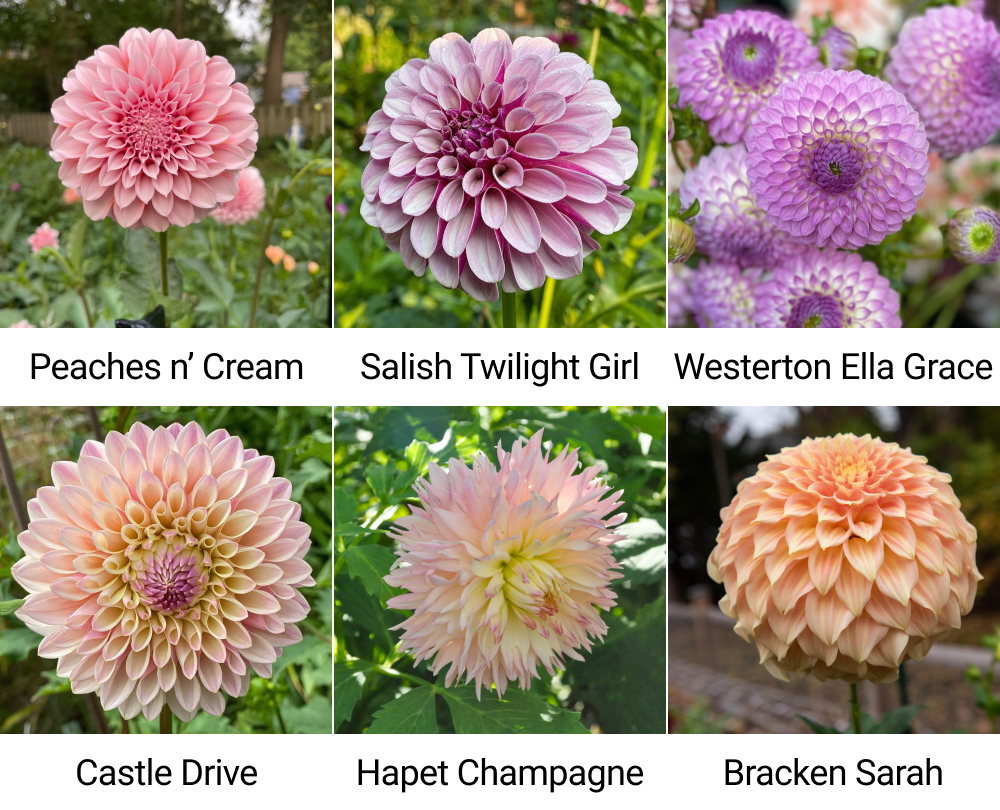
Some of our available varieties
Following the presentation we will have our
first dahlia tuber auction and raffle. We have
25 varieties that will be offered. Our live
auction will be a blast! Be sure to come early
and join the fun and a chance to come away with
some highly desirable and hard to get dahlia
tubers.
Thank you to Chau Ho & Claire Carrazco for
donating many of the wonderful tubers below to
the auction and raffle!
- Salish Twilight Girl
- Westerton Ella Grace
- KA’s Khaleesi
- Peaches n’ Cream
- Cafe au Lait
- Day Dreamer
- Ferncliff Copper
- Salmon Runner
- Sweet Nathalie
and many more varieties from YDS stock
including:
- Bracken Sarah
- Castle Drive
- Labyrinth
- Valley Porcupine
- Clearview Peachy
- Lakeview Peach Fuzz
- Barbarry Fusilier
- Irish Candy
- Hollyhill Golden Boy
- Jeannie Leroux
- Sandia Sunbonnet
- Tahoma Moonshot
- Snoho Doris
- Verrone’s Obsidian
- Wine Eyed Jill
|
|
Mother’s Day Activity at the May 1st Meeting
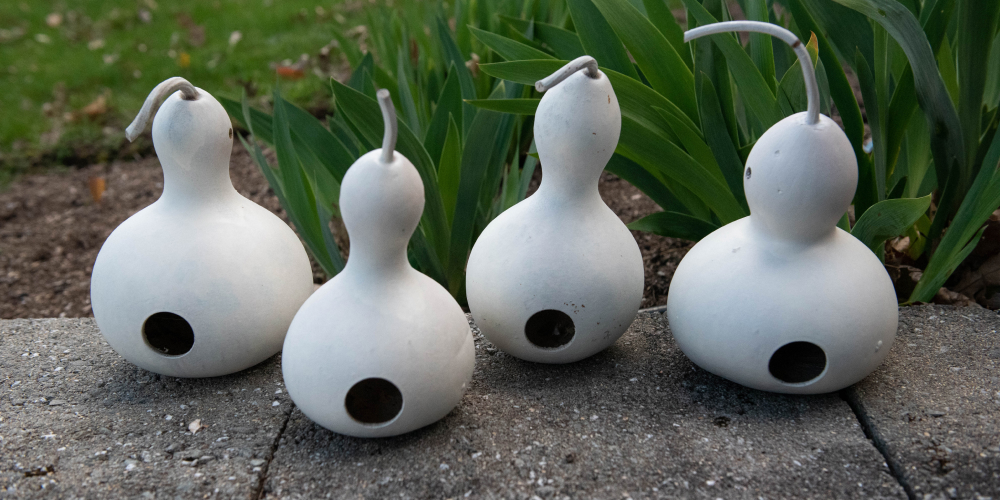
Photo by Misty Florez
Kiddos are welcome to participate in a special
Mother’s Day Craft activity at our May 1st
meeting. We’ll have a table set up with a
painting activity. Make sure the kids are
dressed for creativity. Come early get them
settled around 10:15 and they can paint during
social time before the meeting begins.
|
|
Blizzard - YDS club tuber of the year
In celebration of our first year as a dahlia
club in 2021 YDS members each received a Cornel
dahlia tuber to grow for the season. In 2022 we
are thrilled to continue gifting each YDS Member
a club tuber. Blizzard is our dahlia for the
year; a formal decorative white dahlia known to
be a fantastic cut flower that gives you lots of
easy to divide tubers in the fall. We welcome
members to either share the tuber with a friend
or grow it out and share flowers when they
bloom! We look forward to handing out tubers at
our club meeting on Sunday, May 1st.
|
|
Thank you! April Volunteers
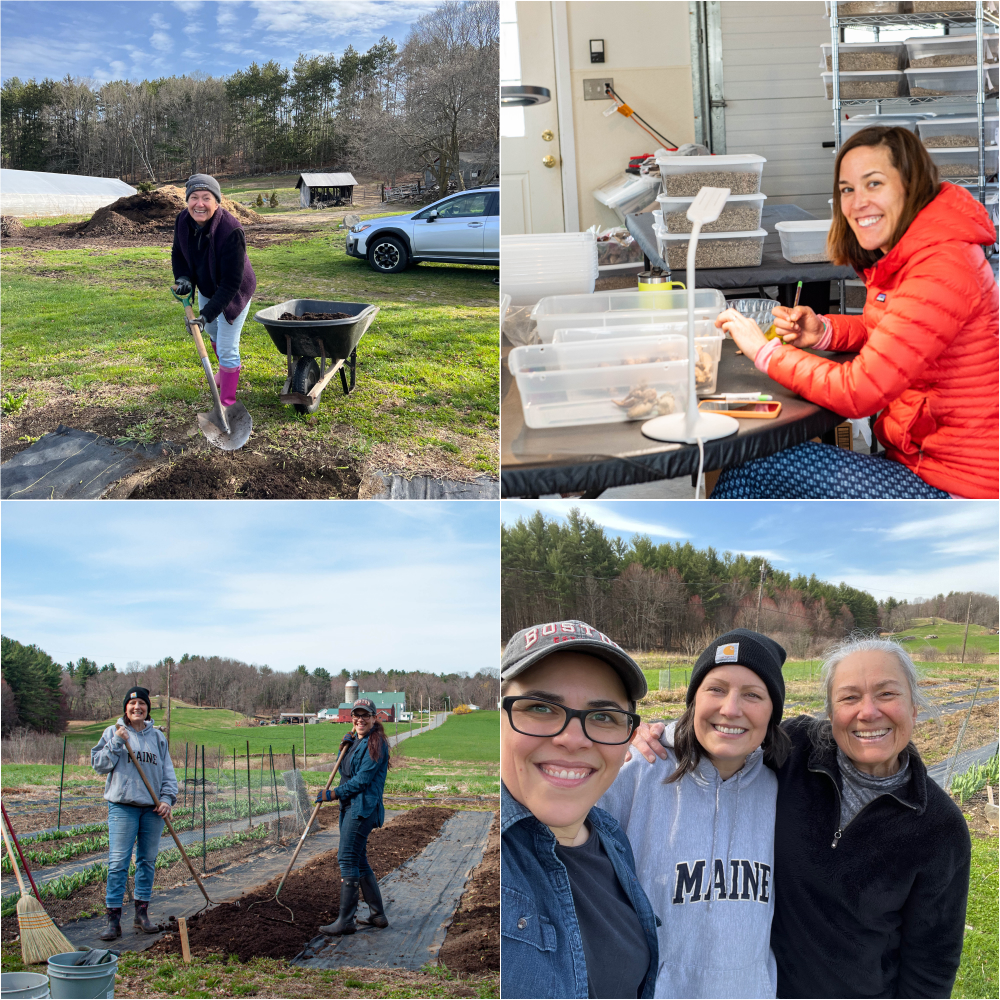
Photos by Misty Florez, Carol Palmer, Lori
Nelson & Mariana Duarte
We have had a great turn out of YDS volunteers
who have joined us this month! Thank you so much
for your help! We didn’t get pictures of
everyone, but love to Thank You all just the
same.
- Andrea Campbell
- Rich D’Orsi
- Mariana Duarte
- Carol Manning
- Lori Nelson
- Annie Reese
|
|
Member Spotlight
Claire Carrazco
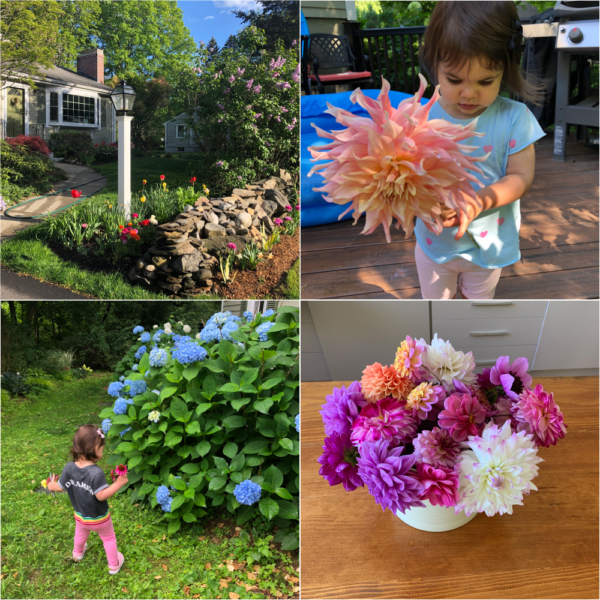
Photography by: Claire Carrazco
My mom and sister are in the club. Our mom has
always kept dahlias and taught us to have our
own cut flowers inside. Giving jars of flowers
away is joyful. Gardening is my antidote to
workplace burnout and replaced my TJ Maxx habit
when the pandemic struck.
I am blessed that under the snow of my early
2018 estate sale house purchase there were
already established mixed woody and herbaceous
perennial borders.
In between the hydrangeas and rhododendrons and
verbenas are fall planted bulbs like crocus,
daffodils, hyacinth and tulips. The PJM flushes
magenta (did you know this rhododendron was
hybridized right here at Weston Nursery?) and
the lilacs bloom for my birthday. My mom gifted
me early spring ranunculus whose corms have been
overwintering in her garage. (These were perfect
to take out as the tubers were going in.)
Early summer highlights the ancient peonies that
came with the property. Then the rosebud azalea
arrives with the Intoxicating heirloom bearded
iris from my mom. Shady hellebores and relegated
hostas mix with columbines and coral bells on
the North side. The hydrangeas bloom, or not, in
their mysterious cycles. Seed flowers like
zinnias cut and come again, snapdragons, cosmos
befuddle me but I still try. The gladiolus corms
keep well and line the exterior wall in the
back.
Then the all consuming dahlia affair! Our mom
loves ball forms because they last and don’t
topple over. I love that the Jowey hybridizer
(Jozef Weyts) is a mathematician. I am a sucker
for dinner plates like Penhill Watermelon - even
in mostly shade it was my most prolific tuber of
2020 (desiccated and perished in my garage in
wood chips in my first attempt to dig up and
store my tubers.)
A few dozen 2021 tubers and late cuttings from
YDS were placed too deeply as afterthoughts, and
floundered, with Cafe au lait saving the season
between the David Austin Roses.
This year YDS has set me up for a more
successful 2022. I scribbled on a photo to plan
an additional dahlia bed. I amended the soil
with Black Earth compost (they will take your
food scraps from curbside pick up bins and bring
you compost - subscription a gift from my
sister).
|
|
Dahlia Tip
Care and Maintenance of Your Garden Tools
By Carol Palmer & Misty Florez
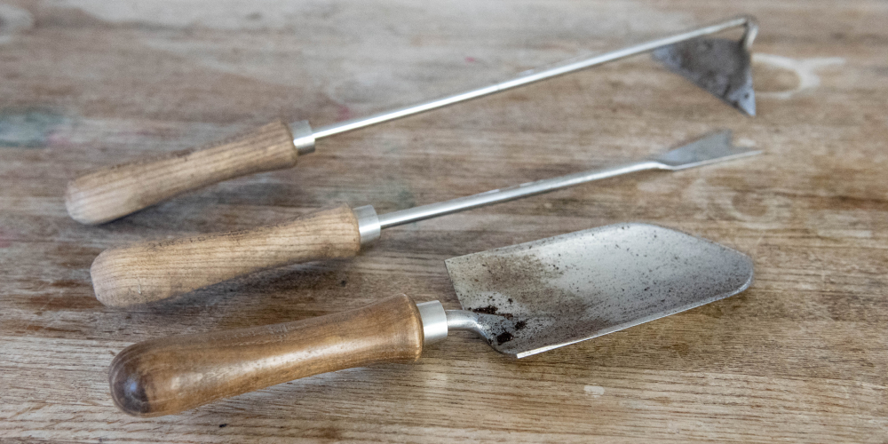
Photos by: Carol Palmer & Misty Florez
Your gardening tools are your number one most
important helper in the garden, so it pays to
keep them clean and well-maintained. They will
last longer, be easier and more of a pleasure to
use, and safer for you as well.
Cleaning:
Soil and debris on metal parts can lead to
corrosion and sticking, so it’s best to clean or
wash your tools after use.
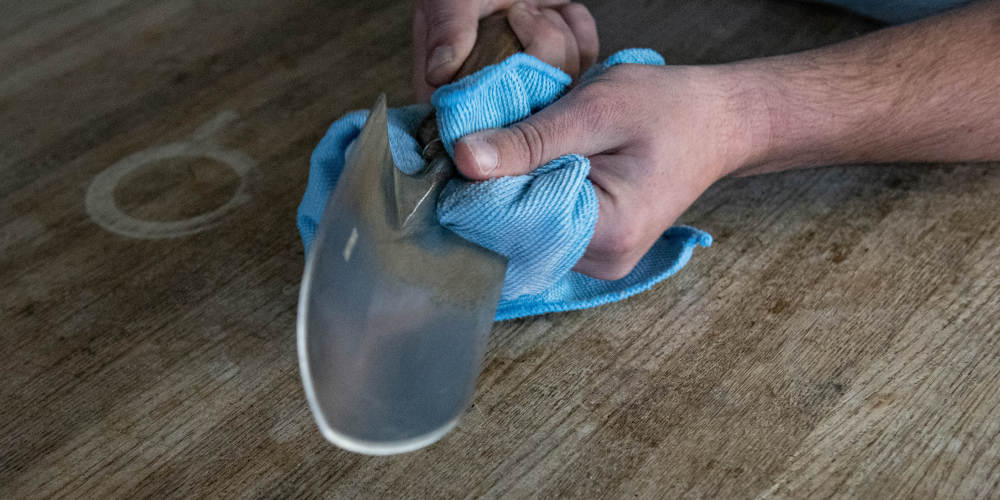
Sharpening:
Blades on cutting tools like pruners, shears and
knives can get dull without being noticed. It’s
a good idea to set a regular schedule for
sharpening your cutting tools, so they only need
a light touch up rather than a major overhaul.
Most major manufacturers of cutting tools offer
a sharpening tool you can purchase.
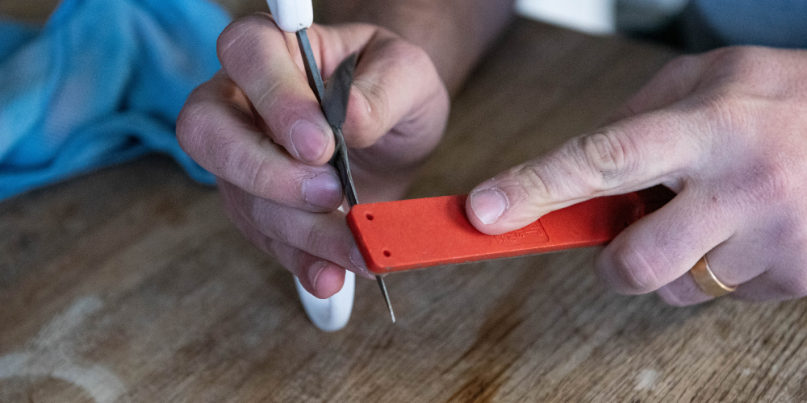
Oiling
All metal moving parts should be oiled regularly
to keep them from sticking or binding. Applying
oil on metal surfaces will also help to prevent
rust.
Wooden handles can be treated at the beginning
and end of the season with boiled linseed oil to
keep out moisture and help prevent the wood from
drying out and cracking.
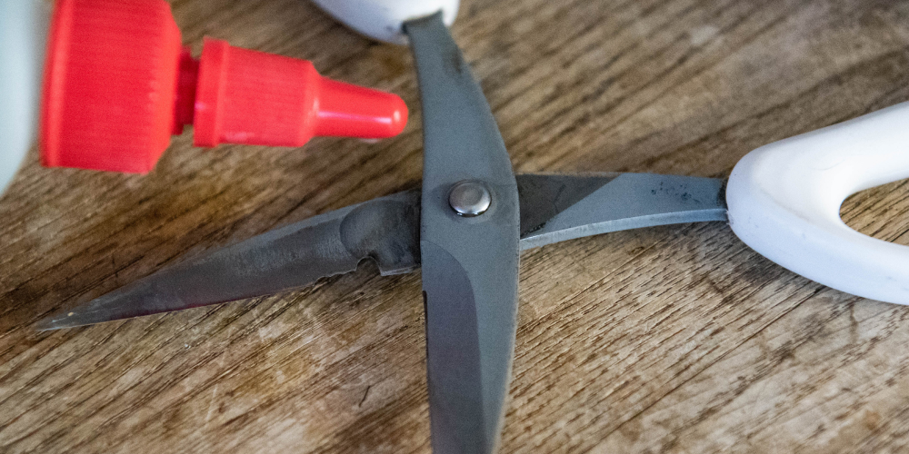
Filing:
Digging tools like trowels and shovels can get
dull and have burrs or rolled edges. Filing down
the rough edges with a single-cut flat file will
bring a nice clean new edge to your digging
tools and weeders. Use light pressure and file
out away from the edge.
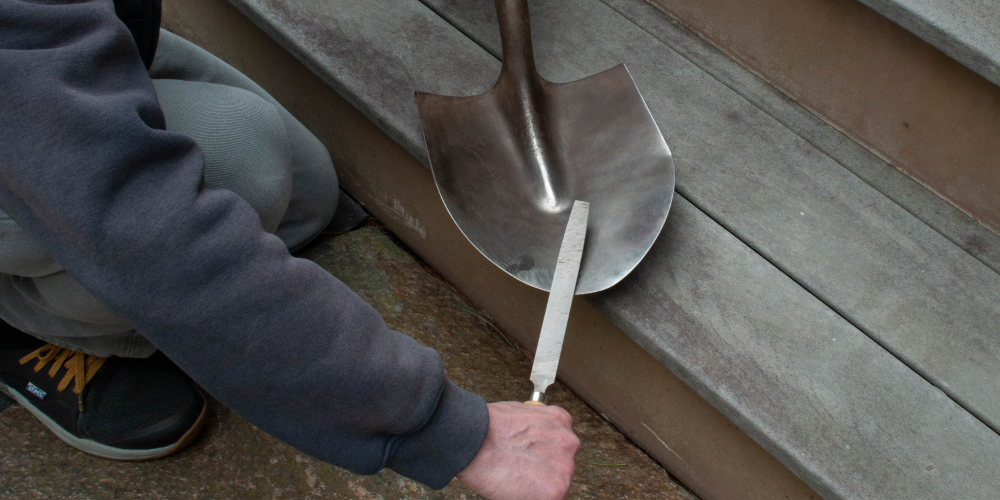
|
|
Dahlia Growing Questions - Ask our Club Facebook
Community
If you have a growing question, post a picture
on the YDS Community Page on Facebook to get
some answers between club meetings.
YDS Facebook Community
|
|
Dahlia Forms
Pompon
Variety: Koko Puff
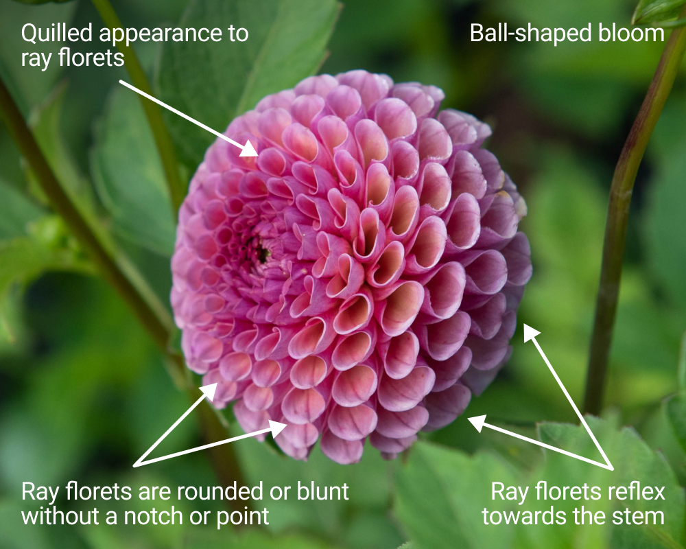
Photography by: Misty Florez
|
|
2022 Volunteer Activities & Dates

2022 Volunteer Activities - SignUp
Genius
We have a new 2022 monthly schedule created in
SignUp Genius to view and signup for club
activities. This link will be “The” Y.D.S.
member volunteer link for the whole year. So
save the link in your Bookmark bar so you are
able to reference it easily. It is a working
document so dates and times will be added as we
move through the calendar and growing season.
Volunteer Hours are flexible. Come for a portion
of the time or come for the whole time. Knowing
when we will have volunteers that have signed up
will help us to anticipate and make plans.
Please feel free to edit a signup as needed.
Sign up the day before or remove yourself from a
signup if something comes up.
Don’t see a day/time on the calendar but you
have time to help? Please reach out and let us
know your availability and if there is something
you would like to help with. We always have a
project in the works and appreciate our members’
support to have everything running smoothly.
Please Note: Some dates/times may change.
If you have signed up for an event and a date or
time is changed you will be notified via SignUp
Genius email.
|
|
2022 Y.D.S. Photography Contest Committee
We are looking for Y.D.S. members to join the
2022 Photography Contest Committee. If you are
interested in working with Misty & Carol to
chair the Photography Contest please reach out.
We would like to get the planning underway
before the season gets into full swing.
|
|
Dahlia Tuber Auction at the Y.D.S. May 1st
Meeting
In addition to the wonderful program we will
have in May we will also have a dahlia tuber
auction and dahlia tuber raffle for some of the
highly desirable and hard to get tubers. Thank
you to Chau for donating tubers to the auction!
- Salish Twilight Girl
- Westerton Ella Grace
- KA’s Khaleesi
-
and many more popular varieties from Y.D.S.
stock will be included. Stay tuned for more
details.
|
|
|
Upcoming Meetings & Events
May 1: Dahlia Hybridizing,
Dahlia Sports & Seed Collecting with Y.D.S
member Andrea Campbell and Dahlia Tuber
Auction & Raffle @ Spence Farm, 41 Wyman
Street, Woburn, MA (10:15am-1pm)
May 15th: Public Tuber Sale @
Massachusetts Horticultural Society The
Gardens at Elm Bank (10:00am - 4:00pm)
*Volunteers needed
June 26th: Zoom Meeting -
With a special guest speaker
July 23rd: Previewing the
dahlia garden and Lily garden tour with Y.D.S
member Roy Christoph, Wenham MA
|
|
|
|
|